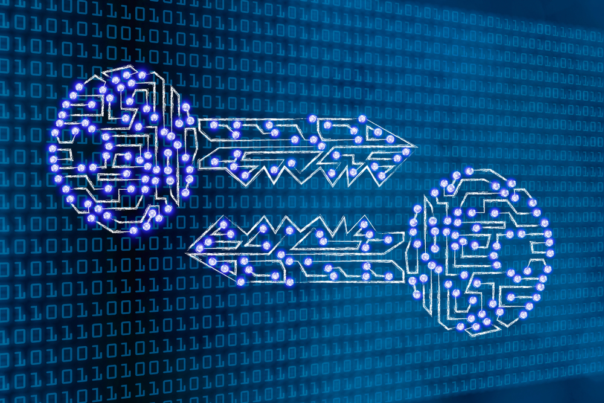

Maya Brody
August 3, 2021
Last Friday, we took part in a very engaging and interesting lesson. Our guest speaker was from The Strong Museum and had an extremely fun day planned for us. In groups, we were asked to brainstorm ideas for a game or app. There were three “teams” and each was given a different task. My assignment was to design a game that informed students about the inequalities in our world and how they can have a direct effect on education. We were only given 40 minutes to design and get all of our ideas in order. However, me and my fellow IT Girls came up with a strong concept. Our app starts in a small town, and as you, a student, level up, your world gets larger and larger. In order to move on, you must complete a series of tasks in each location. By the end, you will be traveling worldwide and experiencing different cultures and will notice the flaws in many education systems. I had so much fun with this, and really enjoyed collaborating with others to come up with a solid game plan.
Maya Brody
July 27, 2021
This video is a tutorial that familiarizes people with the basic HTML rules. I really like this video because it goes into detail and moves slow enough where it is easy to understand and follow along on your own.
Maya Brody
July 22, 2021

I thought that the Machine Learning we did in class today was extremely cool. It is amazing how technology has evolved so quickly and that it has the ability to give personal recommendations to people. Although the suggestions are based on patterns, I do not think that they are always accurate. If you looked at a pair of shoes with green straps, the machine would notice that pattern and probably show you something with similar features. In addition to not always being correct, the outcome is sometimes not fair. In the TedTalk that we watched, a woman’s face was not able to be identified just because of her skin tone. I believe that Machine Learning is intriguing and impressive, but there is still a lot of work to be done. Technology is constantly growing, so I am confident that these devices will be even more successful and effective in the future.
Maya Brody
July 21, 2021
Before this course, I was completely unaware of the impact that cryptography can have on our lives. The articles that we read truly helped me understand the importance of it. I think cryptography is positive as it pushes people to solve crucial mysteries and crack codes. Without it, humans like Elizabeth Friedman would not have had access to such top secret information.The whole process is very intriguing and alluring. After learning more about it, I have realized how tedious the process is. Misinterpreting one letter will throw everything off, making it impossible to solve. However, done correctly, it can lead to amazing findings. All in all, I believe that cryptography is compelling and is becoming essential especially as technology advances.